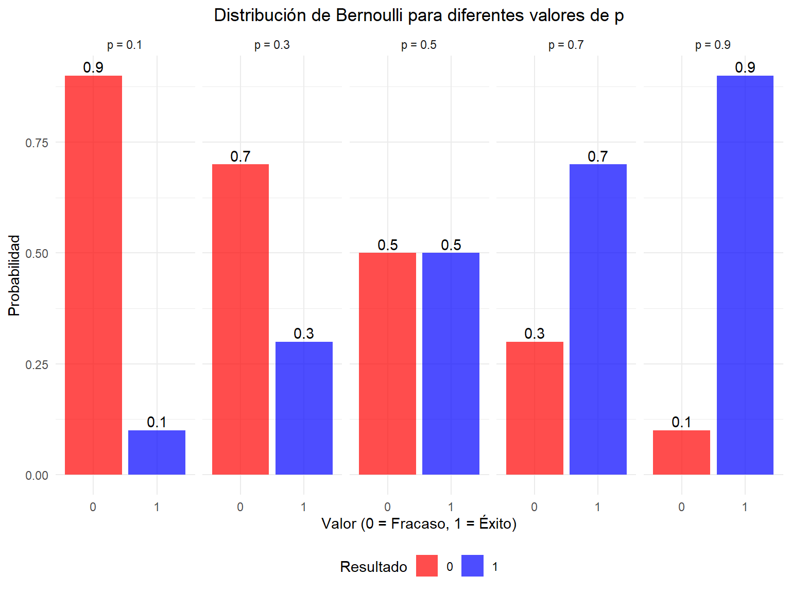
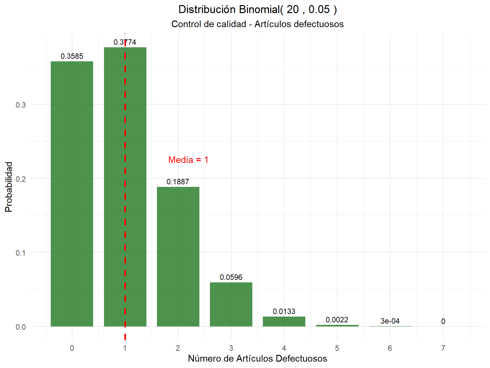
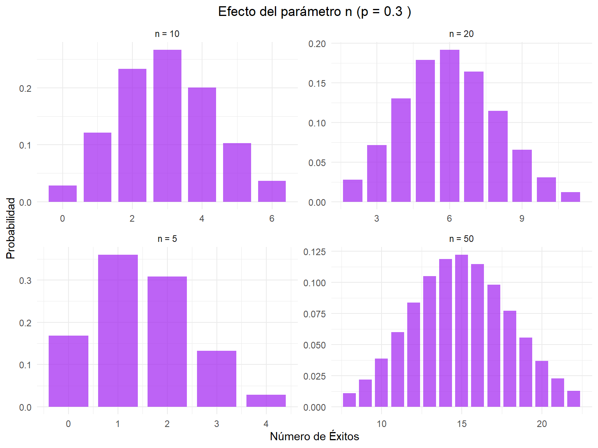
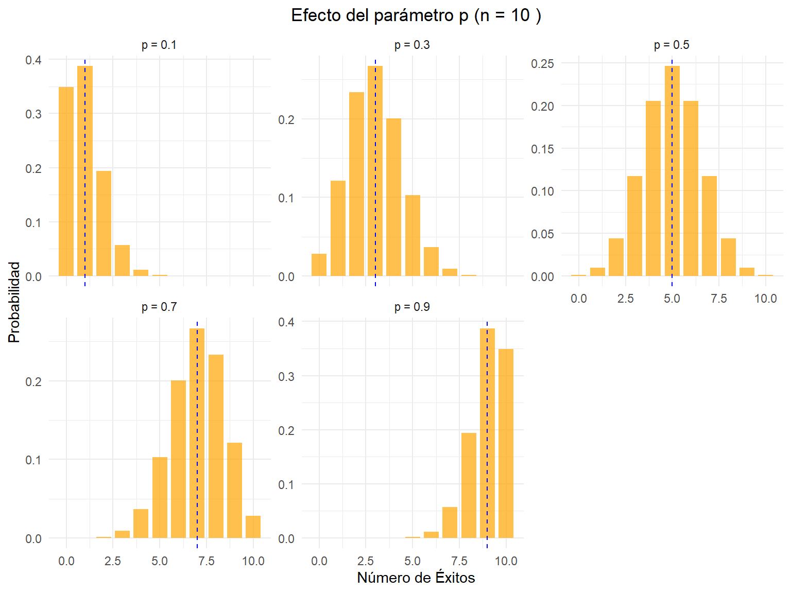
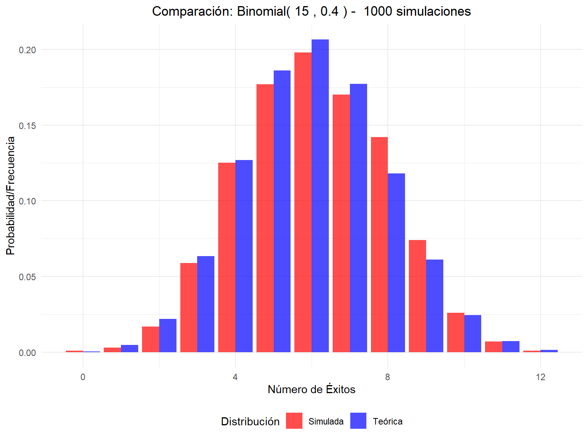
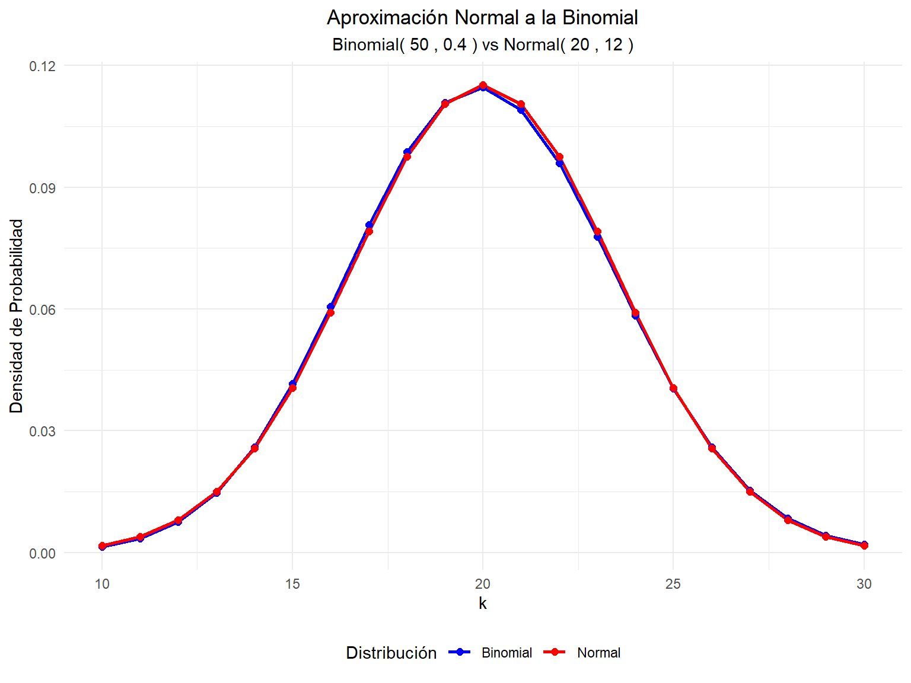
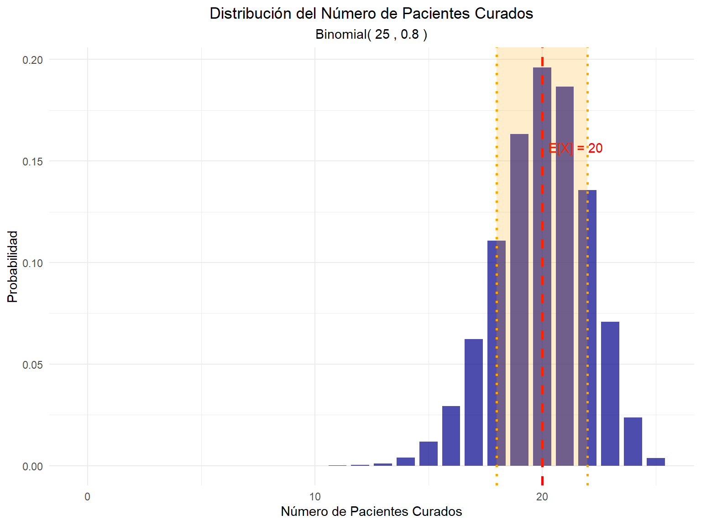

Definición 3.1 Una variable aleatoria \(X\) sigue una distribución de Bernoulli con parámetro \(p\) si puede tomar solo dos valores: 1 (éxito) con probabilidad \(p\) y 0 (fracaso) con probabilidad \(1-p\). La función de probabilidad está dada por:
\[\begin{equation}
f(x) = \begin{cases}
1-p & \text{si } x = 0 \\
p & \text{si } x = 1 \\
0 & \text{en otro caso}
\end{cases}
\end{equation}\]
O de forma compacta: \(f(x) = p^x(1-p)^{1-x}\) para \(x \in \{0,1\}\)
A una variable aleatoria con distribución Bernoulli la denotaremos como \(X \sim \text{Bernoulli}(p)\).
3.2 Características de la Distribución Bernoulli
Parámetros
\(p\): probabilidad de éxito, donde \(0 \leq p \leq 1\)
Consideremos el lanzamiento de una moneda justa, donde “Cara” se considera un éxito (1) y “Sello” un fracaso (0). La probabilidad de obtener cara es \(p = 0.5\).
3.3.2 Variables aleatorias con diferentes probabilidades de éxito
Consideremos variables aleatorias Bernoulli con diferentes valores de \(p\), como se muestra en la siguiente tabla:
Código
# Diferentes valores de pp_values <-c(0.1, 0.3, 0.5, 0.7, 0.9)# Crear data frame para visualizaciónbernoulli_data <-data.frame()for(p in p_values) { temp_data <-data.frame(p =paste("p =", p),x =c(0, 1),probabilidad =c(1-p, p),media = p,varianza = p*(1-p) ) bernoulli_data <-rbind(bernoulli_data, temp_data)}# Tabla de parámetrosparam_bernoulli <-data.frame(p = p_values,Media = p_values,Varianza = p_values * (1- p_values),Desv_Std =sqrt(p_values * (1- p_values)))kable(param_bernoulli, caption ="Parámetros de la distribución Bernoulli para diferentes valores de p",digits =4,col.names =c("p", "Media", "Varianza", "Desv. Estándar")) %>%kable_styling(bootstrap_options ="striped")
Parámetros de la distribución Bernoulli para diferentes valores de p
p
Media
Varianza
Desv. Estándar
0.1
0.1
0.09
0.3000
0.3
0.3
0.21
0.4583
0.5
0.5
0.25
0.5000
0.7
0.7
0.21
0.4583
0.9
0.9
0.09
0.3000
Visualización
Código
ggplot(bernoulli_data, aes(x =factor(x), y = probabilidad, fill =factor(x))) +geom_col(alpha =0.7) +geom_text(aes(label =round(probabilidad, 2)), vjust =-0.3) +facet_wrap(~p, ncol =5) +scale_fill_manual(values =c("0"="red", "1"="blue")) +labs(title ="Distribución de Bernoulli para diferentes valores de p",x ="Valor (0 = Fracaso, 1 = Éxito)",y ="Probabilidad",fill ="Resultado") +theme_minimal() +theme(plot.title =element_text(hjust =0.5),legend.position ="bottom")

Distribución Bernoulli para diferentes valores de p
3.4 Distribución Binomial
Definición 3.2 Una variable aleatoria \(X\) sigue una distribución binomial con parámetros \(n\) y \(p\) si representa el número de éxitos en \(n\) ensayos independientes de Bernoulli, cada uno con probabilidad de éxito \(p\). La función de probabilidad está dada por: \[f(x) = \binom{n}{x} p^x (1-p)^{n-x}\]
para \(x = 0, 1, 2, \ldots, n\), donde \(\binom{n}{x} = \frac{n!}{x!(n-x)!}\). A una varible aleatoria con distribución binomial la denotaremos como: \[X \sim \text{Binomial}(n, p)\]
3.5 Características de la Distribución Binomial
Parámetros
\(n\): número de ensayos (entero positivo)
\(p\): probabilidad de éxito en cada ensayo, donde \(0 \leq p \leq 1\)
Ejemplo 3.1 (Lanzamiento de monedas) Supongamos que lanzamos una moneda justa 10 veces. Queremos encontrar la distribución del número de caras obtenidas.
ggplot(calidad_data[1:8, ], aes(x = Defectos, y = Probabilidad)) +geom_col(fill ="darkgreen", alpha =0.7, width =0.8) +geom_text(aes(label =round(Probabilidad, 4)), vjust =-0.5, size =3) +geom_vline(xintercept = media_defectos, color ="red", linetype ="dashed", size =1) +annotate("text", x = media_defectos +1.2, y =max(prob_defectos) *0.6, label =paste("Media =", media_defectos), color ="red") +scale_x_continuous(breaks =0:7) +labs(title =paste("Distribución Binomial(", n_articulos, ",", p_defecto, ")"),subtitle ="Control de calidad - Artículos defectuosos",x ="Número de Artículos Defectuosos",y ="Probabilidad") +theme_minimal() +theme(plot.title =element_text(hjust =0.5),plot.subtitle =element_text(hjust =0.5))

Distribución Binomial - Control de calidad
3.7 Comparación: Efecto de los Parámetros
A continuación, exploramos cómo varía la distribución binomial al modificar los parámetros \(n\) y \(p\).
3.7.1 Efecto del parámetro n (fijo p = 0.3)
Código
# Diferentes valores de n con p fijon_vals <-c(5, 10, 20, 50)p_fijo <-0.3# Crear data frame para comparacióncomp_n_data <-data.frame()for(n in n_vals) { k_vals <-0:n probs <-dbinom(k_vals, n, p_fijo) temp_data <-data.frame(n =paste("n =", n),k = k_vals,probabilidad = probs,media = n * p_fijo,varianza = n * p_fijo * (1- p_fijo) ) comp_n_data <-rbind(comp_n_data, temp_data)}# Filtrar para visualización (solo valores con probabilidad > 0.01)comp_n_filtered <- comp_n_data[comp_n_data$probabilidad >0.01, ]ggplot(comp_n_filtered, aes(x = k, y = probabilidad)) +geom_col(fill ="purple", alpha =0.7, width =0.8) +facet_wrap(~n, scales ="free") +labs(title =paste("Efecto del parámetro n (p =", p_fijo, ")"),x ="Número de Éxitos",y ="Probabilidad") +theme_minimal() +theme(plot.title =element_text(hjust =0.5))

3.7.2 Efecto del parámetro p (fijo n = 10)
Código
# Diferentes valores de p con n fijop_vals <-c(0.1, 0.3, 0.5, 0.7, 0.9)n_fijo <-10# Crear data frame para comparacióncomp_p_data <-data.frame()for(p in p_vals) { k_vals <-0:n_fijo probs <-dbinom(k_vals, n_fijo, p) temp_data <-data.frame(p =paste("p =", p),k = k_vals,probabilidad = probs,media = n_fijo * p,varianza = n_fijo * p * (1- p) ) comp_p_data <-rbind(comp_p_data, temp_data)}ggplot(comp_p_data, aes(x = k, y = probabilidad)) +geom_col(fill ="orange", alpha =0.7, width =0.8) +geom_vline(aes(xintercept = media), color ="blue", linetype ="dashed") +facet_wrap(~p, scales ="free_y") +labs(title =paste("Efecto del parámetro p (n =", n_fijo, ")"),x ="Número de Éxitos",y ="Probabilidad") +theme_minimal() +theme(plot.title =element_text(hjust =0.5))

Efecto del parámetro p en la distribución binomial
3.8 Simulación Binomial y Comparación con la Teórica
Se realiza una simulación de 1000 experimentos de una variable aleatoria con distribución \(Binomial(n=15, p=0.4)\) y se comparan las estadísticas observadas (media y varianza) con las teóricas, así como la distribución observada con la teórica.
Comparación frecuencias observadas vs probabilidades teóricas
k
Freq. Observada
Prob. Teórica
0
0.001
0.0005
1
0.003
0.0047
2
0.017
0.0219
3
0.059
0.0634
4
0.125
0.1268
5
0.177
0.1859
6
0.198
0.2066
7
0.170
0.1771
8
0.142
0.1181
9
0.074
0.0612
Visualización comparativa
Código
library(tidyr)# Preparar datos para visualizacióncomp_sim_long <- comparacion_bin %>%pivot_longer(cols =c(Freq_Observada, Prob_Teorica),names_to ="Tipo",values_to ="Probabilidad") %>%mutate(Tipo =case_when( Tipo =="Freq_Observada"~"Simulada", Tipo =="Prob_Teorica"~"Teórica" ))ggplot(comp_sim_long, aes(x = k, y = Probabilidad, fill = Tipo)) +geom_col(position ="dodge", alpha =0.7) +scale_fill_manual(values =c("Teórica"="blue", "Simulada"="red")) +labs(title =paste("Comparación: Binomial(", n_trials, ",", p_sim_bin, ") - ", n_sim_bin, "simulaciones"),x ="Número de Éxitos",y ="Probabilidad/Frecuencia",fill ="Distribución") +theme_minimal() +theme(plot.title =element_text(hjust =0.5),legend.position ="bottom")

Comparación entre distribución teórica y simulada
3.9 Relación entre Bernoulli y Binomial
Teorema 3.1 Si \(X_1, X_2, \ldots, X_n\) son variables aleatorias independientes e idénticamente distribuidas con \(X_i \sim \text{Bernoulli}(p)\), entonces:
if(condicion1 & condicion2) {# Calcular probabilidades exactas y aproximadas k_aprox <-0:n_aprox prob_exacta <-dbinom(k_aprox, n_aprox, p_aprox)# Aproximación normal (con corrección de continuidad) media_normal <- n_aprox * p_aprox var_normal <- n_aprox * p_aprox * (1- p_aprox) sd_normal <-sqrt(var_normal)# Crear data frame para comparación aprox_data <-data.frame(k = k_aprox,Binomial = prob_exacta,Normal =dnorm(k_aprox, media_normal, sd_normal) )# Filtrar valores significativos aprox_filtered <- aprox_data[aprox_data$Binomial >0.001, ]# Visualización aprox_long <- aprox_filtered %>%pivot_longer(cols =c(Binomial, Normal),names_to ="Distribucion",values_to ="Densidad")ggplot(aprox_long, aes(x = k, y = Densidad, color = Distribucion)) +geom_line(size =1) +geom_point(size =2) +scale_color_manual(values =c("Binomial"="blue", "Normal"="red")) +labs(title ="Aproximación Normal a la Binomial",subtitle =paste("Binomial(", n_aprox, ",", p_aprox, ") vs Normal(", media_normal, ",", round(sd_normal^2, 2), ")"),x ="k",y ="Densidad de Probabilidad",color ="Distribución") +theme_minimal() +theme(plot.title =element_text(hjust =0.5),plot.subtitle =element_text(hjust =0.5),legend.position ="bottom")}

3.11 Aplicaciones Prácticas
Ejemplo 3.3 (Medicina - Efectividad de Tratamiento) Un nuevo medicamento tiene una probabilidad de 0.8 de curar una enfermedad. Se prueba en 25 pacientes.
Código
# Parámetrosn_pacientes <-25p_cura <-0.8# Preguntas de interés# 1. ¿Cuál es la probabilidad de que exactamente 20 pacientes se curen?prob_20_curas <-dbinom(20, n_pacientes, p_cura)# 2. ¿Cuál es la probabilidad de que al menos 22 pacientes se curen?prob_min_22 <-1-pbinom(21, n_pacientes, p_cura)# 3. ¿Cuál es la probabilidad de que entre 18 y 22 pacientes se curen?prob_18_22 <-pbinom(22, n_pacientes, p_cura) -pbinom(17, n_pacientes, p_cura)# Parámetros estadísticosmedia_curas <- n_pacientes * p_curavarianza_curas <- n_pacientes * p_cura * (1- p_cura)desv_std_curas <-sqrt(varianza_curas)cat("Aplicación Médica - Efectividad del tratamiento:\n")
Aplicación Médica - Efectividad del tratamiento:
Código
cat("Parámetros: n =", n_pacientes, ", p =", p_cura, "\n\n")
Parámetros: n = 25 , p = 0.8
Código
cat("Estadísticas esperadas:\n")
Estadísticas esperadas:
Código
cat("Número esperado de curas:", media_curas, "\n")
cat("P(al menos 22 curas):", round(prob_min_22, 4), "\n")
P(al menos 22 curas): 0.234
Código
cat("P(entre 18 y 22 curas):", round(prob_18_22, 4), "\n")
P(entre 18 y 22 curas): 0.7927
Código
# Visualizaciónk_medicina <-0:n_pacientesprob_medicina <-dbinom(k_medicina, n_pacientes, p_cura)medicina_data <-data.frame(k = k_medicina, probabilidad = prob_medicina)ggplot(medicina_data, aes(x = k, y = probabilidad)) +geom_col(fill ="darkblue", alpha =0.7, width =0.8) +geom_vline(xintercept = media_curas, color ="red", linetype ="dashed", size =1) +geom_vline(xintercept =c(18, 22), color ="orange", linetype ="dotted", size =1) +annotate("text", x = media_curas +1.5, y =max(prob_medicina) *0.8, label =paste("E[X] =", media_curas), color ="red") +annotate("rect", xmin =18, xmax =22, ymin =0, ymax =Inf, alpha =0.2, fill ="orange") +labs(title ="Distribución del Número de Pacientes Curados",subtitle =paste("Binomial(", n_pacientes, ",", p_cura, ")"),x ="Número de Pacientes Curados",y ="Probabilidad") +theme_minimal() +theme(plot.title =element_text(hjust =0.5),plot.subtitle =element_text(hjust =0.5))

3.12 Ejercicios Propuestos
3.12.1 Ejercicios de Bernoulli
Ejercicio 3.1 Una máquina produce piezas defectuosas con probabilidad 0.02. Si se define éxito como “pieza defectuosa”:
¿Cuál es la probabilidad de obtener una pieza no defectuosa?
Calcule la media y varianza de esta distribución
Si se inspeccionan 10 piezas independientemente, ¿cuál es la probabilidad de encontrar exactamente 2 defectuosas?
Ejercicio 3.2 En un examen de opción múltiple con 4 opciones por pregunta, un estudiante responde al azar:
Modele como Bernoulli la respuesta a una pregunta
¿Cuál es la probabilidad de acertar?
Calcule los parámetros estadísticos
3.12.2 Ejercicios de Binomial
Ejercicio 3.3 Se lanza una moneda 15 veces: - a) ¿Cuál es la probabilidad de obtener exactamente 8 caras? - b) ¿Cuál es la probabilidad de obtener al menos 12 caras? - c) Calcule la media y desviación estándar
Ejercicio 3.4 Un medicamento tiene efectividad del 85%. Se administra a 20 pacientes: - a) ¿Cuál es la probabilidad de que se curen exactamente 18 pacientes? - b) ¿Cuál es la probabilidad de que se curen entre 15 y 19 pacientes? - c) ¿Cuántos pacientes se espera que se curen?
Ejercicio 3.5 Demostrar el siguiente teorema y verificarlo mediante simulación.
Sean \(X\) y \(Y\) dos variables aleatorias independientes con distribución \(bin(n, p)\), y \(bin(m, p)\), respectivamente. Entonces la variable \(X+Y\) tiene distribución \(bin(n+m, p)\).